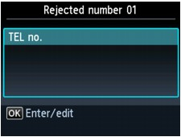
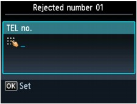
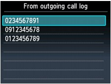
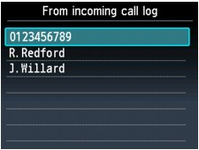

You can set the machine to reject faxes with no sender information or those from specific senders.
Select one of the following conditions to reject faxes.
-
Faxes with no caller identification.
-
Faxes from senders not registered to the coded speed dial codes.
-
Faxes from senders registered in the machine as rejected numbers.
Select a fax rejection condition following the procedure below.
-
Make sure that the machine is turned on.
-
Press the Setup button.
-
Select
 Device settings, then press the OK button.
Device settings, then press the OK button. -
Use the

 button to select FAX settings, then press the OK button.
button to select FAX settings, then press the OK button. -
Use the
button to select Security control, then press the OK button. -
Use the
button to select FAX reception reject, then press the OK button. -
Use the
button to select ON, then press the OK button. -
Use the
button to select the fax rejection condition, then press the OK button.- No sender info.
-
Rejects faxes with no caller identification.
- Coded dial unset
-
Rejects faxes from the senders not registered to coded speed dial codes.
- Rejected numbers
-
Rejects faxes from the senders registered in the machine as rejected numbers.
-
For details on how to register the rejected number, see Registering the Rejected Number.
 Note
Note-
When the machine rejects reception, Reception rejected. is displayed on the LCD.
-
Faxes with no caller identification are also rejected when the setting other than No sender info. is selected.
Registering the Rejected Number
Register the rejected number following the procedure below.
-
When the confirmation screen to register the rejected number is displayed, use the
button to select Yes, then press the OK button. -
Use the
button to select the dial code to register, then press the OK button. -
Use the
button to select a registration method, then press the OK button.Register the rejected number depending on the registration method.
-
Direct entry
When you select this registration method, the screen to register the fax/telephone number is displayed.
The LCD on MX880 series
The LCD on MX420 series
For MX880 series, the screen to enter the fax/telephone number is displayed when you press the OK button. Enter the fax/telephone number you want to register, then press the left Function button.
For MX420 series, use the Numeric buttons to enter the fax/telephone number you want to register.
-
From outgoing call log
When you select this registration method, the screen to select the fax/telephone number from the outgoing call logs is displayed.
Use the
button to select a fax/telephone number, then press the OK button. -
From incoming call log
When you select this registration method, the screen to select the fax/telephone number or the name from the incoming call logs is displayed.
Use the
button to select a fax/telephone number or a name, then press the OK button.Note-
This registration method may not be available depending on the country or region of purchase.
-
-
-
Finalize registration.
-
For MX880 series:
Press the left Function button.
-
For MX420 series:
Press the OK button.
-
Note-
To register another rejected number, use the
button to select another dial code, then register the rejected number.You can register up to 10 rejected numbers.
-
You can print the list of rejected numbers.
-
To change the registered rejected number:
-
Select a registered rejected number you want change, then press the OK button.
-
Use the
button to select Edit, then press the OK button.The screen to change the registered rejected number is displayed.
-
Change the registered rejected number in the same procedure when you register.
-
Finalize registration in the same procedure when you register.
-
-
To delete the registered rejected number:
-
Select a registered rejected number you want delete, then press the OK button.
-
Use the
button to select Delete, then press the OK button.The confirmation screen is displayed.
-
Use the
button to select Yes, then press the OK button.
-
-
You can register the rejected number in Rejected numbers under TEL number registration in the Fax menu.